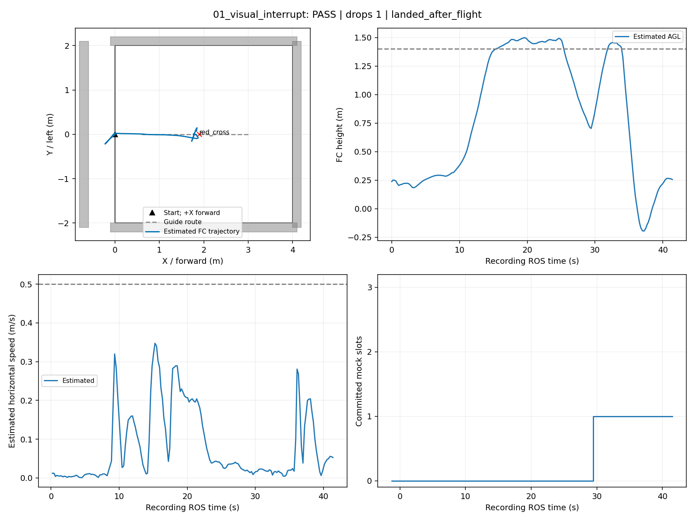
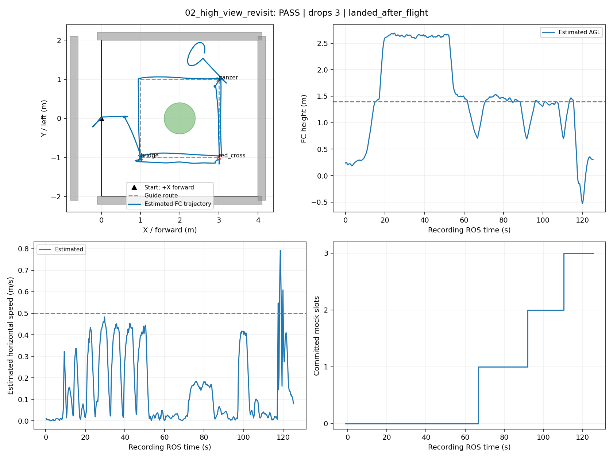
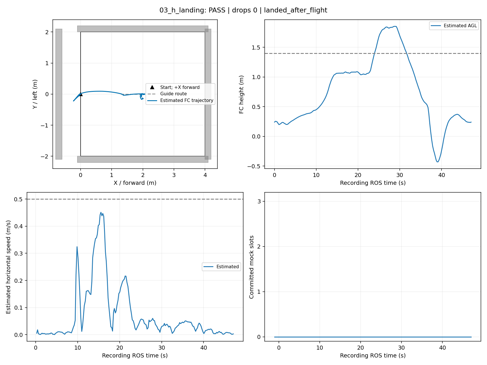
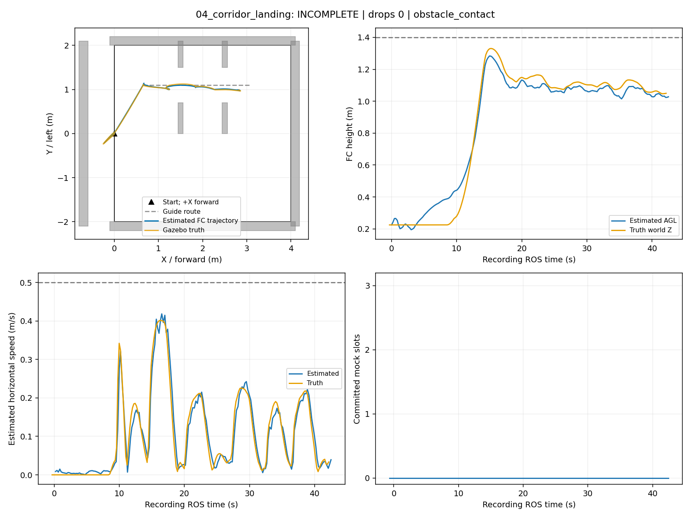
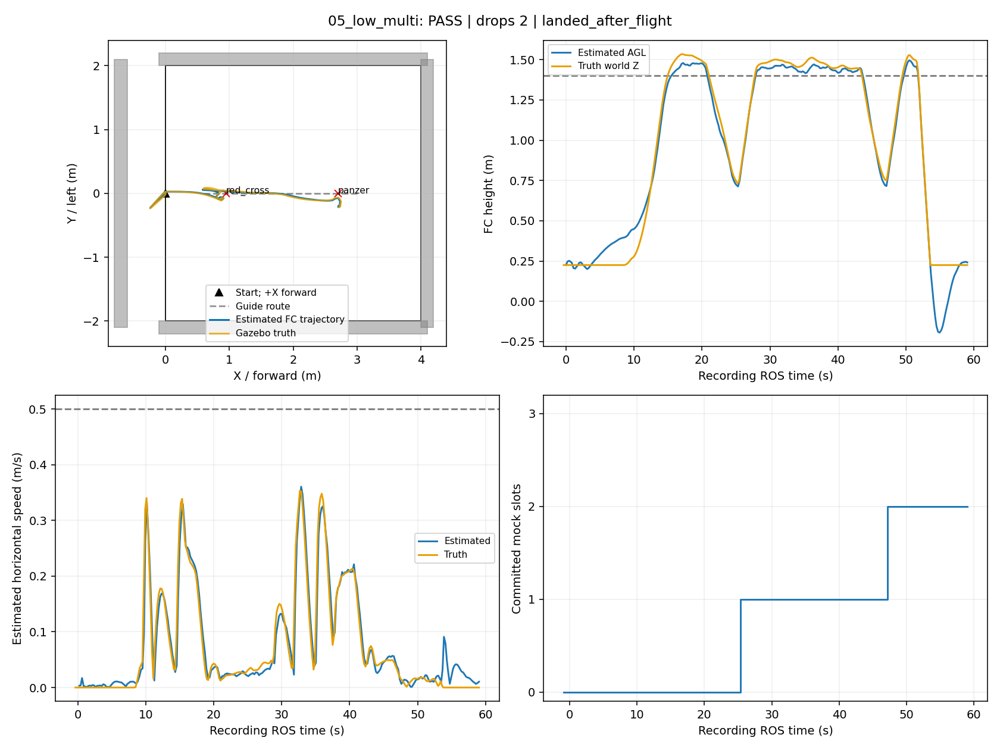
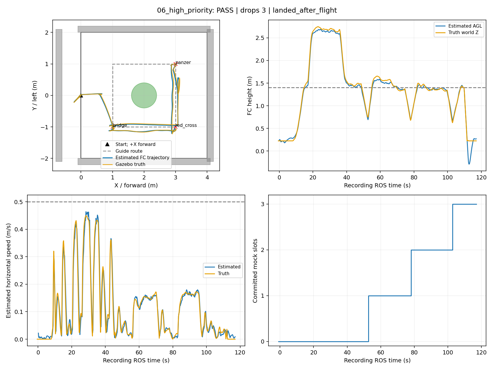
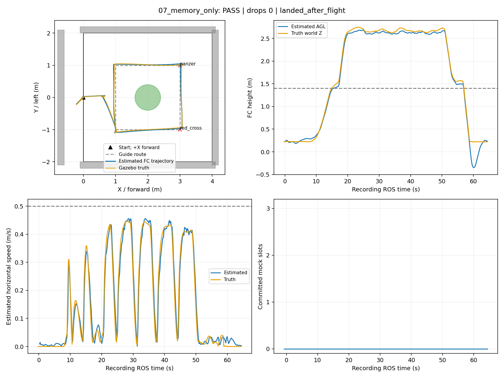
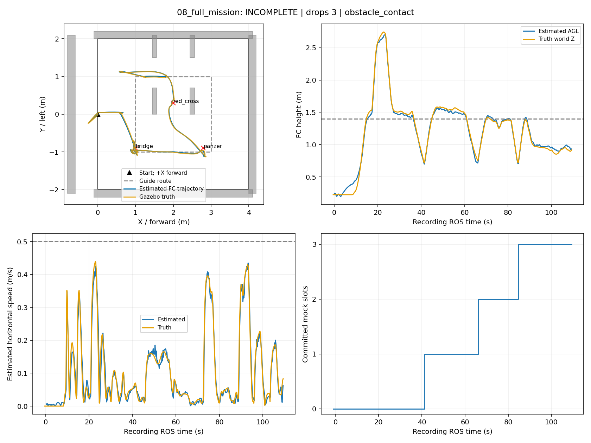

八组板端专项：同链仿真与录像
真实 Gazebo/PX4/定位/规划/视觉链；模拟执行器。三路录像分别播放；固定5fps编码，消息丢帧会缩短视频时长，准确时序以帧时间CSV与ROS计时为准。任务计时不包含前置起飞。图中蓝线为飞控估计；有独立真值记录的轮次另画橙线（高度为Gazebo世界Z），目标与障碍轮廓仅用于事后分析。
01_visual_interrupt — PASS
任务启动至结束 27.677 ROS秒；模拟投递 1/1；结束原因 landed_after_flight。验收详情

report_replay (40.800000s)
overview (31.600000s)
camera_raw (40.800000s)
camera_annotated (40.800000s)
02_high_view_revisit — PASS
任务启动至结束 111.61500000000001 ROS秒；模拟投递 3/3；结束原因 landed_after_flight。验收详情

report_replay (125.600000s)
overview (93.200000s)
camera_raw (125.600000s)
camera_annotated (125.600000s)
03_h_landing — PASS
任务启动至结束 34.22 ROS秒；模拟投递 0/0；结束原因 landed_after_flight。验收详情

report_replay (47.200000s)
overview (35.200000s)
camera_raw (47.200000s)
camera_annotated (47.200000s)
04_corridor_landing — INCOMPLETE
任务启动至结束 28.308 ROS秒；模拟投递 0/0；结束原因 obstacle_contact。验收详情

report_replay (42.600000s)
overview (31.400000s)
camera_raw (42.600000s)
camera_annotated (42.600000s)
05_low_multi — PASS
任务启动至结束 45.056 ROS秒；模拟投递 2/2；结束原因 landed_after_flight。验收详情

report_replay (59.200000s)
overview (44.400000s)
camera_raw (59.200000s)
camera_annotated (59.200000s)
06_high_priority — PASS
任务启动至结束 103.43799999999999 ROS秒；模拟投递 3/3；结束原因 landed_after_flight。验收详情

report_replay (117.200000s)
overview (84.600000s)
camera_raw (117.200000s)
camera_annotated (117.200000s)
07_memory_only — PASS
任务启动至结束 50.656 ROS秒；模拟投递 0/0；结束原因 landed_after_flight。验收详情

report_replay (64.400000s)
overview (48.800000s)
camera_raw (64.400000s)
camera_annotated (64.400000s)
08_full_mission — INCOMPLETE
任务启动至结束 95.64699999999999 ROS秒；模拟投递 3/3；结束原因 obstacle_contact。验收详情

report_replay (109.200000s)
overview (82.600000s)
camera_raw (109.200000s)
camera_annotated (109.200000s)